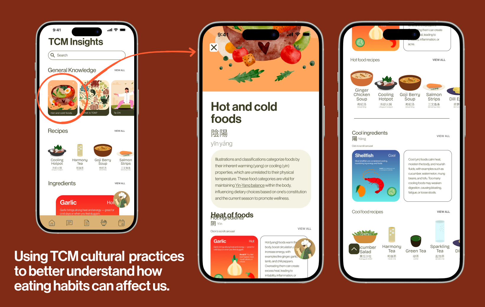
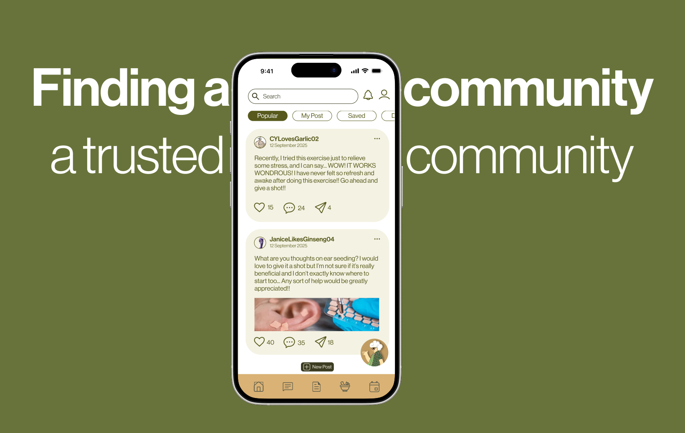
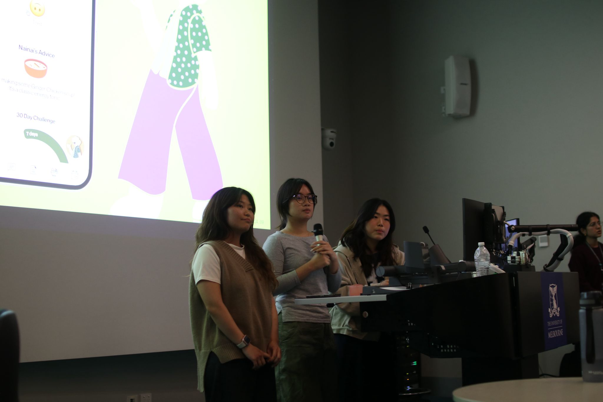

Building Nai Nai, for the people the healthcare system can't reach
Nai Nai is a concept I designed for CISSA's Medical track — a digital companion that turns a daily mood check-in into a safe, community-vetted Traditional Chinese Medicine remedy. It took 1st place by treating trust, not information, as the actual problem to solve.
01 — CONTEXT
A health system that doesn't reach everyone equally
28% of Australians live in rural and remote areas, where health outcomes already trail the cities (ABS, 2023). Traditional Chinese Medicine could help close some of that gap — non-invasive, well suited to age-related conditions, and in rising demand. But the workforce that delivers it is shrinking and ageing out, fastest in exactly the regions that need it most.
02 — THE PROBLEM
The Supply-Trust Paradox
Demand for TCM is rising as Australia ages — but the profession is short on practitioners and short on trust at the same time, and neither half fixes the other on its own.
The Supply Crisis
The workforce has shrunk 1.9% over five years and is ageing fast. Practitioner density in regional areas has dropped sharply, leaving remote Australians with little to no access at all.
The Trust Gap
Consumer interest is high, but medical skepticism isn't going away. Clinical evidence is hard to find in English, and safety concerns around herbal toxicity persist (Healthdirect, 2024). A directory of strangers doesn't fix that.
How might we democratise access to Traditional Chinese Medicine information for remote users, while rebuilding trust in a shrinking profession?
03 — THE SOLUTION
A grandmother, not a directory
We decided the trust gap wasn't only clinical — it was emotional. A directory of vetted strangers doesn't feel like anyone you'd actually listen to. So instead of another clinical app, we built a person.
nǎinai — noun. Grandmother, in Mandarin.
Ask Nainai. Nainai knows.

The brief split into two jobs Nai Nai had to do at once: build long-term trust in TCM, and get someone through today. We worked with cultural advisors throughout to keep the content TCM-aligned and respectful, not decorative.
04 — FEATURES
What Nai Nai actually does
The three core features all work together to make TCM feel like a safe, doable option — not just more information to sort through.
Daily check-in → real remedy
A one-tap mood check-in goes straight to a specific, doable home remedy — not a wall of information to sort through alone.
TCM Insights
A searchable library of recipes, plain-language articles, and an ingredient "hot/cold energy" guide — vetted, not just searched for.
Community + Ask Nainai
A forum for swapping remedies with other users and practitioners, plus an in-app chat with Nai Nai herself between check-ins.

05 — PROCESS
From sticky notes to a grandmother
Direction came from rapid ideation — Post-its, one-minute bursts of five ideas each, then a fifteen-minute group walkthrough to argue for the strongest ones and funnel down. Health-tracking, pill-logging, and inter-family wellness apps all had a turn before Traditional Chinese Medicine stuck, once we realised it sat exactly at the intersection of the Medical track and an actual demographic shift already underway.
WHAT WE HEARD

"I take a Panadol and avoid coffee."

"I power through the pain and go to sleep."

"I take a nap, and if that doesn't work, I take a Panadol."

"I drink energy drinks."
Nobody disliked the idea of expert advice. They just didn't have it nearby, in time, or in a way that felt like it was for them — which is exactly the gap a character, not another feature, could close.
06 — REFLECTION
What this taught me
Nai Nai won CISSA's Medical track by refusing to treat trust as a UI problem solvable with badges or directories. It's still a concept — untested with real TCM practitioners, and far from a build — but it proved the more useful question wasn't "how do we share more information," but "who would someone actually believe."
Trust isn't a UI problem
A believable character did more work for the trust gap than another feature ever would have.
Constraints sharpen ideas
Funnelling from three other directions under hackathon time pressure forced a sharper, more specific problem than more time alone would have found.
Still just a concept
No real practitioners or safety review yet — that's the real next step, not a finished product.
